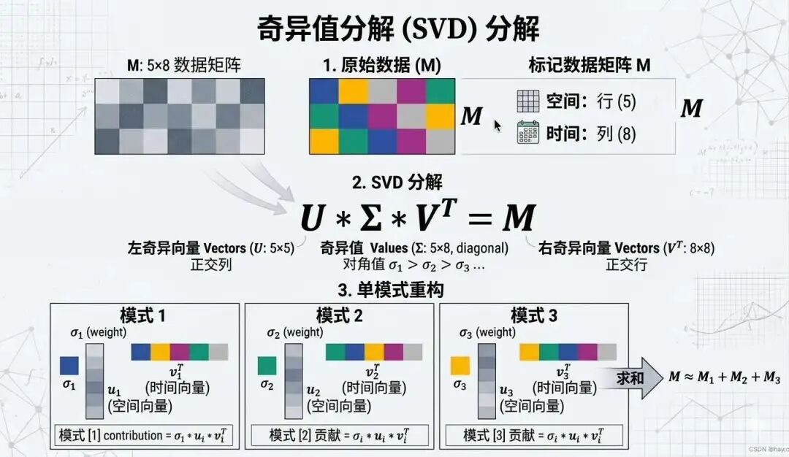
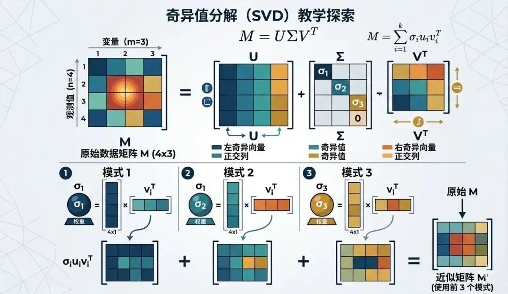

第三定律：机器人在不违反第一、第二定律的情况下要尽可能保护自己的生存——阿西莫夫
在2006年，Netflix曾经举办了一个奖金为100万美元的推荐系统算法比赛，任何团队若能将Netflix的推荐系统的预测精度提升10%，就可以获得100万美元的奖金。
这项挑战吸引了众多的顶尖的数据科学家和算法工程师，而其中有一个团队通过矩阵分解技术：奇异值分解SVD，拿下了最终的大奖。
SVD 算法是另一种常用的机器学习降维算法，它广泛应用于推荐系统、图像压缩、文本分析等领域。它的主要原理是：把一个原本杂乱的大矩阵，拆成几个更有结构、更容易分析的小矩阵，从而提取出数据里最重要的特征。
你可以先这样朴素地理解 SVD：假设原始数据是一幅高清图片，SVD 降维之后，就像从这幅高清图片里保留下最重要的轮廓和结构。虽然细节会损失一些，但核心结构，如形状、方向都得以保留。

相信大家在各种购物平台上浏览商品时，都有被平台推荐商品的经验，比如“猜你喜欢”，比如“喜欢了这件商品的人也喜欢了这件”等。
通过这种推荐商品的形式，互联网用户获取信息的方式已经从主动搜索已经转为被动推荐，然而这些“精确无比”的推荐算法又是怎么实现的呢？下面我就使用SVD奇异值分解算法来实现这样一个轻量级的“推荐系统”。
假设淘宝有3位用户：小明、小红、小刚 和 4种商品：手机壳、充电线、耳机、运动鞋，以及2种用户行为：如购买、评分形成一个 稀疏矩阵（大部分位置是0的矩阵为稀疏矩阵）：
| 用户 | 手机壳 | 充电线 | 耳机 | 运动鞋 |
|---|---|---|---|---|
| 小明 | 5 | 0 | 3 | 0 |
| 小红 | 0 | 4 | 0 | 2 |
| 小刚 | 2 | 1 | 0 | 4 |
我们也可以将其写成矩阵形式：
$$ A = \begin{pmatrix} 5 & 0 & 3 & 0 \\ 0 & 4 & 0 & 2 \\ 2 & 1 & 0 & 4 \end{pmatrix} $$其中数字代表用户对商品的评分，比如5分表示很喜欢，0分表示没买过。
现在的问题是表格里有很多0，这意味着用户连这件商品都没有买过，比如小明没买过运动鞋，怎么猜他会不会喜欢？
要想实现商品对任意用户的精准推荐，前提是要挖掘出用户的“潜在兴趣”，而SVD就是这一“挖掘工具”。比如：有的人更偏好数码类商品、有的人更偏好运动类商品、有的人则两边都喜欢一点。
SVD 干的事情，本质上就是：把这张原本很零散的大表，拆成几个更有规律的小表，从而把“隐藏在数据背后的兴趣结构”找出来。
打个比方， SVD的任务是把这张大表格拆成三个小表格，就像把积木拆成三个矩阵：
1：用户特征表格（U）：U矩阵又称为SVD的左奇异矩阵，在这个场景下，用于描述用户的隐藏兴趣，比如小明是“科技迷”，小红是“实用派”。
2：商品特征表格（$V^T$）：V矩阵又称为SVD的右奇异矩阵，在这个场景下，用于描述商品的隐藏属性，比如手机壳是“电子产品”，运动鞋是“运动类”。
3 奇异值对角特征表格（Σ）：Σ矩阵其实就是对角矩阵，其对角线元素在这称为奇异值，代表不同兴趣方向的重要性，数值越大越重要，它可以告诉你哪些特征更重要，比如“科技迷”比“实用派”更能影响推荐。
这三者之间的关系是：
$$ A = U \Sigma V^T $$我们可以用 「翻译不同宇宙的密码本」 来理解SVD的应用过程。想象用户和商品原本是两个不同的宇宙，即各自用不同的语言（坐标系）描述世界。
比如在用户宇宙中小明用“科技迷”“性价比”等标签描述自己；在商品宇宙中手机壳用“电子产品”“耐用性”等标签描述自己。但这两个宇宙之间没有“联系”，淘宝需要通过SVD让它们“对话”。
SVD的作用就是找到两个矩阵之间的联系，具体分三步：
1）寻找用户和商品的潜在特征： 首先旋转坐标系，对齐正交基，SVD先后得到 $U$—用户特征矩阵的基底和 $V^T$—商品特征矩阵的基底，使得新坐标轴互相垂直，每个轴代表一种独立特征，如“科技属性”“运动属性”，又或者是“科技感”、“时尚度”、“性价比”，它们之间没有相似度，没有信息重叠。
用户特征表：
| 用户 | 科技属性 | 运动属性 |
|---|---|---|
| 小明 | 0.8 | 0.2 |
| 小红 | 0.1 | 0.9 |
| 小刚 | 0.5 | 0.5 |
这张表的意思就是：小明更偏“科技”，小红更偏“运动”，小刚两边都还行。
同样，商品也可以在这两个潜在维度上表示出来，商品特征表：
| 商品 | 科技属性 | 运动属性 |
|---|---|---|
| 智能手机 | 0.9 | 0.3 |
| 保温杯 | 0.1 | 0.8 |
| 笔记本电脑 | 0.8 | 0.6 |
| 文具套装 | 0.2 | 0.7 |
2）进行兴趣维度“重要性排序”： 虽然兴趣维度很多，但是只需要保留最重要的2到3个，SVD通过奇异值矩阵Σ 可以对新坐标中的矩阵进行拉伸或缩放，使核心特征更加突出，奇异值矩阵Σ上的对角线的数值大小就代表了当前兴趣维度的重要性。
例如，Σ中第一个值可能是“科技属性”的强度，第二个是“运动属性”的强度。
| 行\列 | 特征1(科技属性） | 特征2(运动属性) | 特征3 | 特征4 |
|---|---|---|---|---|
| 特征1 | 4.2 | 0 | 0 | 0 |
| 特征2 | 0 | 2.1 | 0 | 0 |
| 特征3 | 0 | 0 | 1.3 | 0 |
| 特征4 | 0 | 0 | 0 | 0.8 |
这张表表示：第一个方向最重要，第二个方向也比较重要，后面的方向影响越来越小。所以在做降维时，我们往往不会把所有维度都保留，而是只保留最重要的前几个维度。
这就像你总结一个人的性格，没必要列出 50 条，只抓住最核心的几点就够了。
3）通过奇异值大小推荐商品： 在得到以上三个特征表（用户特征表、商品特征表、奇异值特征表）之后，我们要如何通过这三个矩阵来预测用户对新商品的评分呢？
一个比较直观的理解方式是：用户在潜在空间里有一个向量，商品在潜在空间里也有一个向量，如果这两个向量比较“匹配”，那用户大概率就会喜欢这个商品。
首先我们通过计算用户特征和奇异值的乘积，可以放大用户的主要特征：
$$ 用户特征权重 = 用户特征 × 奇异值权重 $$比如用户小明的用户特征向量为：[0.9（科技偏好）, 0.2（运动偏好）]，而奇异值特征矩阵为：[3.2（科技权重）, 0], [0, 2.8（运动权重）]，计算结果为：[0.9×3.2, 0.2×2.8] = [2.88（数码偏好权重）, 0.56（运动偏好权重）]。
最终的结果就是数码偏好的权重远大于运动偏好的权重，说明用户小明是很偏爱数码商品的。
然后再计算用户特征权重与商品特征（属性列）的内积，这一步就是类似在计算两者的余弦相似度，最终预测评分矩阵的公式及结果如下：
$$ 预测评分矩阵 = 用户特征 × 奇异值权重 × 商品特征ᵀ $$预测评分表：
| 用户\商品 | 手机壳 | 充电线 | 耳机 | 运动鞋 |
|---|---|---|---|---|
| 小明 | 5（已知） | 2.8（预测） | 3（已知） | 1.5（预测） |
| 小红 | 3（预测） | 4（已知） | 1.2（预测） | 2（已知） |
| 小刚 | 2（已知） | 1（已知） | 2.3（预测） | 4（已知） |
这样一来，平台就可以根据预测分数的高低，把用户可能感兴趣但还没接触过的商品推荐给他。
前面我们是站在"生活应用"的角度理解 SVD。接下来我们再从数学角度看一下：SVD 到底是在干什么。
SVD矩阵分解的核心原理可以朴素的理解为：任意一个矩阵A，都可以分解为三个特定矩阵的乘积，一个负责“先换个观察角度-旋转” (左奇异矩阵)、一个负责“按不同方向拉伸或压缩” (奇异值矩阵)、一个负责“再换到最终的角度-再旋转” (右奇异矩阵)。写成公式就是：
$$ A = U \Sigma V^T $$
你可以把它理解为：$V^T$ 先把原来的坐标系转一下，$\Sigma$ 在新的坐标系里，$U$ 对不同方向进行不同程度的拉伸或压缩，再把结果转到最终的位置。
为什么SVD要分解成这么三个矩阵，是凭空设想出来的吗？实际上并非如此。
数学家们注意到，对于任意一个实数矩阵 $A$ （大小为 $m \times n$ ），尽管它本身可能不规则，但由它构造出的两个矩阵 $A^T A$ 和 $A A^T$ 却具有非常良好的性质：
对于没有高等数学基础的人来说，直接抛出以上结论有点难以理解，下面用个简单例子来说明，设一个最简单的 2×3 实数矩阵：
$$ A= \begin{pmatrix} 1 & 2 & 3 \\ 4 & 5 & 6 \end{pmatrix} $$1）先求转置 $A^T$
$$ A^T= \begin{pmatrix} 1 & 4 \\ 2 & 5 \\ 3 & 6 \end{pmatrix} $$那么：
$$ A^T A = \begin{pmatrix} 17 & 22 & 27 \\ 22 & 29 & 36 \\ 27 & 36 & 45 \end{pmatrix} $$你会发现它关于主对角线对称，这就是对称矩阵。
2）再看 $A A^T$
$$ A A^T = \begin{pmatrix} 14 & 32 \\ 32 & 77 \end{pmatrix} $$它同样也是关于主对角线对称。
对称矩阵还有一个强大的性质：它必然可以进行特征分解，而且特征向量可以组成一组正交归一的方向。
SVD 正是利用了这一点。
以具体的 2 × 3 的矩阵例子来说明：
$$ A = \begin{bmatrix} 1 & 1 & 0 \\ 0 & 1 & 1 \end{bmatrix} $$首先计算 $A^TA$，它是一个 $3 \times 3$ 的方阵，然后计算 $AA^T$，它是一个 $2 \times 2$ 的方阵：
$$ A^TA = \begin{bmatrix} 1 & 1 & 0 \\ 1 & 2 & 1 \\ 0 & 1 & 1 \end{bmatrix}, \quad AA^T = \begin{bmatrix} 2 & 1 \\ 1 & 2 \end{bmatrix} $$然后分别计算 $A^TA$ 和 $AA^T$ 的特征值和对应的单位特征向量得到左右奇异矩阵。
对于 $AA^T$，求解其特征方程得到特征值 $\lambda_1 = 3$ 和 $\lambda_2 = 1$。对应的单位特征向量分别为 $\begin{pmatrix} 1/\sqrt{2} \\ 1/\sqrt{2} \end{pmatrix}$ 和 $\begin{pmatrix} 1/\sqrt{2} \\ -1/\sqrt{2} \end{pmatrix}$。
这些特征向量构成了左奇异矩阵 $U$： $U = \begin{bmatrix} 1/\sqrt{2} & 1/\sqrt{2} \\ 1/\sqrt{2} & -1/\sqrt{2} \end{bmatrix}$
对于 $A^TA$，求解其特征方程得到特征值 $\lambda_1 = 3, \lambda_2 = 1, \lambda_3 = 0$。对应的单位特征向量分别为 $\begin{pmatrix} 1/\sqrt{6} \\ 2/\sqrt{6} \\ 1/\sqrt{6} \end{pmatrix}, \begin{pmatrix} 1/\sqrt{2} \\ 0 \\ -1/\sqrt{2} \end{pmatrix}$, 和 $\begin{pmatrix} 1/\sqrt{3} \\ -1/\sqrt{3} \\ 1/\sqrt{3} \end{pmatrix}$。
这些特征向量构成了右奇异矩阵 $V$（注意在SVD公式中我们使用其转置 $V^T$）： $V = \begin{bmatrix} 1/\sqrt{6} & 1/\sqrt{2} & 1/\sqrt{3} \\ 2/\sqrt{6} & 0 & -1/\sqrt{3} \\ 1/\sqrt{6} & -1/\sqrt{2} & 1/\sqrt{3} \end{bmatrix}$
奇异值矩阵是一个对角矩阵，对角矩阵的特点是除了对角线上的元素，其他元素的值都为0。
对角线上的奇异值来源于左奇异矩阵或者是右奇异矩阵的特征值的算术平方根，奇异值的大小代表了当前特征的重要程度，我们可以用SVD实现PCA的原理也在于此。
我们下面继续以上一步得到的左右奇异矩阵的特征值为例，构造出奇异值矩阵 $\Sigma$：
奇异值来自 $A^TA$ (或 $AA^T$) 的特征值的开平方，即 $\sigma_i = \sqrt{\lambda_i}$，并按照从大到小的顺序排列。
所以奇异值为 ：
$$ \sigma_1 = \sqrt{3}， \sigma_2 = 1 $$奇异值矩阵 $\Sigma$ 的尺寸 与 $A$ 相同：2×3，非零奇异值按顺序排列在对角线上：
$$ \Sigma = \begin{bmatrix} \sqrt{3} & 0 & 0 \\ 0 & 1 & 0 \end{bmatrix} $$奇异值越大，通常说明这个方向越重要。所以做降维时，我们往往优先保留大的奇异值，对应的小奇异值则可以舍掉。
将得到的 $U, \Sigma, V^T$ 相乘，即可还原出原矩阵 A：
$$ A = U \Sigma V^T = \begin{bmatrix} 1/\sqrt{2} & 1/\sqrt{2} \\ 1/\sqrt{2} & -1/\sqrt{2} \end{bmatrix} \begin{bmatrix} \sqrt{3} & 0 & 0 \\ 0 & 1 & 0 \end{bmatrix} \begin{bmatrix} 1/\sqrt{6} & 2/\sqrt{6} & 1/\sqrt{6} \\ 1/\sqrt{2} & 0 & -1/\sqrt{2} \\ 1/\sqrt{3} & -1/\sqrt{3} & 1/\sqrt{3} \end{bmatrix} $$SVD的分解形式 $A = U \Sigma V^T$ 有着非常直观的几何解释：任何一个矩阵 A 所表示的线性变换，都可以看作是由三个更基本的变换连续作用的结果：
奇异值的大小决定了缩放程度，也反映了矩阵在不同方向上的“影响力度”。
SVD奇异值分解和PCA主成分分析都是用于对数据进行降维，那这两者之间有什么异同点呢？
1）数学本质不同
SVD是一种矩阵分解方法，可以将任意矩阵分解为三个矩阵的乘积，而PCA是一种统计方法，通过线性变换，将高维数据投影到低维正交基(主成分)上，使得投影后的数据方差最大化，但是只能针对协方差矩阵进行进行特征分解。
2）应用场景不同
SVD经常用于图像压缩，推荐系统，基因表达分析场景。PCA 常用于噪声去除、通过降维使数据可视化、以及金融领域提取独立风险因子。
3）两者的关联性
SVD 和 PCA 关系很近。对中心化后的数据矩阵做 SVD，可以得到 PCA 的主成分方向。 也就是说，PCA 在实际计算时，很多时候就是借助 SVD 来完成的。
所以你可以简单理解为：PCA 更偏“统计分析视角”，SVD 更偏“线性代数工具视角”；但它们在降维问题上经常是连在一起用的。
在统计学和机器学习中，SVD 的典型应用非常多。比如：
所以，从本质上来说，SVD 最厉害的地方就在于：它能从一堆看起来杂乱的数据里，提炼出最核心、最稳定、最有代表性的结构。
奇异值分解（SVD）：一种把原始矩阵拆成三个矩阵的数学方法，写成公式就是 $A = U\Sigma V^T$。它的作用是从复杂数据里提取出最重要的结构，常用于推荐系统、图像压缩和降维。
潜在特征（Latent Features）：指数据中原本没有直接写出来，但可以通过算法挖掘出来的“隐藏规律”。比如在推荐系统里，“科技偏好”“运动偏好”就可以看作潜在特征。
奇异值（Singular Values）：SVD 中 $Σ$ 对角线上的那些数，代表不同特征方向的重要程度。奇异值越大，说明这个方向越重要，保留的信息通常也越多。
低秩近似（Low-rank Approximation）：指只保留最大的几个奇异值和对应方向，用一个更简单的矩阵去近似原矩阵。这样既能压缩数据，又能尽量保住主要信息，是 SVD 实现降维的核心思想。
矩阵补全（Matrix Completion）：指根据一个不完整的矩阵，去推测那些原本空缺的位置可能是多少。在推荐系统里，它常被用来预测“某个用户可能会喜欢但还没接触过的商品”。